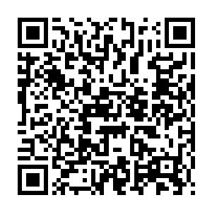

📷 Juega la misión en tu teléfonoUn bucle sirve para repetir un grupo de instrucciones varias veces sin escribirlas otra vez. En lugar de AVANZA, AVANZA, AVANZA escribimos REPETIR 3 VECES [AVANZA]: el robot hace exactamente lo mismo, ¡pero tú escribes mucho menos! Cada repetición completa del grupo se llama vuelta. Ya usás bucles sin saberlo: aplaudir 3 veces, dar 20 pasos o palmear una por una las tortillas son patrones que se repiten.
✅ Bucle = un cuerpo que se repite N veces → menos que escribir, ¡lo mismo que ejecutar!
Un bucle tiene dos partes fáciles de reconocer: el número de vueltas (la N de REPETIR N VECES) y el cuerpo (las instrucciones que van dentro de los corchetes [ ] y se repiten en cada vuelta). Fíjate: escribir no es lo mismo que ejecutar. En REPETIR 10 VECES [AVANZA] escribes solo 2 instrucciones, ¡pero el robot ejecuta 10!
| Parte del bucle | ¿Qué es? | Ejemplo |
|---|---|---|
| 🗣️ REPETIR N VECES | Abre el bucle e indica cuántas vueltas dará el cuerpo | REPETIR 5 VECES [ … ] |
| 🔢 Número de vueltas (N) | Cuántas veces se repite el cuerpo completo | El 5 de REPETIR 5 VECES |
| 📦 Cuerpo [ … ] | Las instrucciones que se repiten en cada vuelta | [AVANZA, GIRA DERECHA] |
| 🌀 Vuelta | Una repetición completa del cuerpo | Vuelta 2 de 4 |
| 💰 Ahorro | Las instrucciones que dejas de escribir gracias al bucle | Escribes 2, ejecutas 10 |
Cuando el robot camina deja un rastro: las casillas pintadas por donde pasa (contando la de salida). Con el bucle correcto, ese rastro dibuja figuras: REPETIR N VECES [AVANZA] pinta una línea (N + 1 casillas); REPETIR 4 VECES [AVANZA, GIRA DERECHA] dibuja un cuadrado; y con el patrón «sube y dobla, sube y dobla» sale una escalera.
| Error | Por qué está mal | Lo correcto |
|---|---|---|
| Contar mal las vueltas (la N) | Una línea de 5 casillas necesita 4 vueltas, no 5. | N = casillas − 1 (por la de salida) ✔ |
| Olvidar el giro en el cuerpo | Sin GIRA DERECHA el robot nunca dobla. | Poner AVANZA y GIRA dentro de [ ] ✔ |
| Repetir a mano lo que el bucle ya repite | Se pierde el ahorro del bucle. | Escribir el cuerpo una sola vez ✔ |
| Confundir escritas con ejecutadas | REPETIR 10 VECES [AVANZA] son 2 escritas, 10 ejecutadas. | Contar aparte escritas y ejecutadas ✔ |
| Usar la figura equivocada | Un cuadrado necesita 4 vueltas, no 3. | Contar los lados y las esquinas ✔ |
| Columna A | Columna B |
|---|---|
| 1. ____ Bucle | A. Cada repetición completa del cuerpo del bucle |
| 2. ____ REPETIR N VECES | B. Las instrucciones que van dentro de los corchetes [ ] |
| 3. ____ Cuerpo del bucle | C. Se dibuja con REPETIR 4 VECES [AVANZA, GIRA DERECHA] |
| 4. ____ Número de vueltas (N) | D. Algo que se repite siguiendo una regla |
| 5. ____ Vuelta | E. Un bucle dentro de otro bucle |
| 6. ____ Patrón | F. Las instrucciones que dejas de escribir gracias al bucle |
| 7. ____ Rastro | G. Cuántas veces se repite el cuerpo (la N) |
| 8. ____ Cuadrado | H. Repite un grupo de instrucciones varias veces |
| 9. ____ Ahorro | I. Las casillas pintadas por donde pasa el robot |
| 10. ____ Bucle anidado | J. La instrucción que abre el bucle e indica las vueltas |
| Actividad | Lugar | Valor | Nota obtenida | Observación |
|---|---|---|---|---|
| Copió los contenidos de este material en su cuaderno de Programación. | Tarea en el hogar | 100 | ||
| Resolvió la sección «Ponte a Prueba» directamente en esta ficha. | Tarea en el aula, un día antes del examen | 100 | ||
| Dibujó en su cuaderno cuadriculado el rastro de un bucle dictado y escribió qué figura salió. | Tarea en el hogar | 100 | ||
| Prueba impresa realizada en el aula. | Evaluación en el aula | 100 | ||
| Promedio nota final → | % | |||
Recuerde que ya aprendió a sacar el promedio: sume el total del valor obtenido y divídalo entre cuatro. El resultado será su nota final. Perderá puntos si no completa el trabajo, si su letra no es legible o si escribe con faltas de ortografía.
Esta hoja se imprime suelta: es solo para el docente o para la autoevaluación guiada.